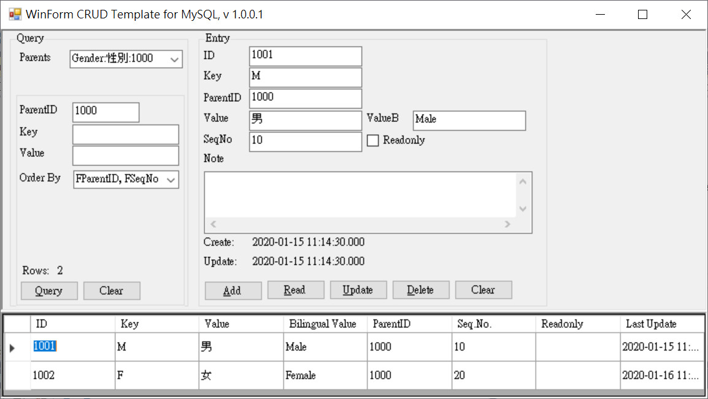

WinForm CRUD Template for MySQL
WebTool
本程式示範新增、查詢、修改、刪除 MySQL 資料庫資料的語法, 使用 Oracle 原生的 MySql.Data.MySqlClient .Net Core Class Library, v 6.10.9 於 Visual Studio 2015 中開發, 作為語法細節參考.
原始碼:
下載
資料庫:
下載
測試資料:
下載
執行畫面:

新增
iAffected = 0; sCmd = "INSERT INTO `TConfig` (`FParentID`, `FSeqNo`, `FKey`, `FValue`, `FValueB`, `FReadonly`, `FNote`) VALUES (@FParentID, @FSeqNo, @FKey, @FValue, @FValueB, @FReadonly, @FNote)"; try { using (MySqlConnection cn1 = new MySqlConnection(_sConnectionString)) using (MySqlCommand command = cn1.CreateCommand()) { command.CommandText = sCmd; command.Parameters.AddWithValue("@FParentID", FParentID.ZToObject_DBNull()); command.Parameters.AddWithValue("@FSeqNo", FSeqNo.ZToObject_DBNull()); command.Parameters.AddWithValue("@FKey", txtFKey.Text.ZToObject_DBNull()); command.Parameters.AddWithValue("@FValue", txtFValue.Text.ZToObject_DBNull()); command.Parameters.AddWithValue("@FValueB", txtFValueB.Text.ZToObject_DBNull()); command.Parameters.AddWithValue("@FReadonly", chkReadonly.Checked.ZToObject_DBNull()); command.Parameters.AddWithValue("@FNote", txtFNote.Text.ZToObject_DBNull()); cn1.Open(); iAffected = command.ExecuteNonQuery(); } } catch (Exception e1) { MessageBox.Show(e1.Message); return; } if (iAffected != 1) { MessageBox.Show("Fail."); return; }
查詢
DataRow DBReadRow_ID(int iID) { try { using (MySqlConnection cn1 = new MySqlConnection(_sConnectionString)) using (MySqlCommand command = cn1.CreateCommand()) { command.CommandText = "Select * from TConfig where FID=@FID"; command.Parameters.AddWithValue("@FID", iID); cn1.Open(); using (MySqlDataAdapter adapter1 = new MySqlDataAdapter(command)) { DataSet ds1 = null; ds1 = new DataSet(); adapter1.Fill(ds1); if (ds1.Tables[0].Rows.Count < 1) return null; return ds1.Tables[0].Rows[0]; } } } catch (Exception ex1) { MessageBox.Show(ex1.Message + _sConnectionString); } return null; } void EntryRead(int iID) { DataRow row1 = DBReadRow_ID(iID); if (row1 == null) { EntryClear(); MessageBox.Show($"No data found. ID={iID}."); return; } // Fetch to buffers. txtFID.Text = row1["FID"].ZToInt().ZToString(); txtFParentID.Text = row1["FParentID"].ZToInt().ZToString(); txtFSeqNo.Text = row1["FSeqNo"].ZToInt().ZToString(); txtFKey.Text = row1["FKey"].ZToString(); txtFValue.Text = row1["FValue"].ZToString(); txtFValueB.Text = row1["FValueB"].ZToString(); chkReadonly.Checked = row1["FReadonly"].ZToInt() == 1; txtFNote.Text = row1["FNote"].ZToString(); lblFCreateTime.Text = row1["FCreateTime"].ZToDateTime().ZToString_MsDash(); lblFUpdateTime.Text = row1["FUpdateTime"].ZToDateTime().ZToString_MsDash(); }
修改
int iAffected = 0; string sCmd = "Update `TConfig` set `FParentID`=@FParentID, `FSeqNo`=@FSeqNo, `FKey`=@FKey, `FValue`=@FValue, `FValueB`=@FValueB, `FReadonly`=@FReadonly, `FNote`=@FNote, `FUpdateTime`=now() where `FID`=@FID and `FUpdateTime`=@FUpdateTime"; try { using (MySqlConnection cn1 = new MySqlConnection(_sConnectionString)) using (MySqlCommand command = cn1.CreateCommand()) { command.CommandText = sCmd; command.Parameters.AddWithValue("@FParentID", FParentID.ZToObject_DBNull()); command.Parameters.AddWithValue("@FSeqNo", FSeqNo.ZToObject_DBNull()); command.Parameters.AddWithValue("@FKey", txtFKey.Text.ZToObject_DBNull()); command.Parameters.AddWithValue("@FValue", txtFValue.Text.ZToObject_DBNull()); command.Parameters.AddWithValue("@FValueB", txtFValueB.Text.ZToObject_DBNull()); command.Parameters.AddWithValue("@FReadonly", chkReadonly.Checked.ZToObject_DBNull()); command.Parameters.AddWithValue("@FNote", txtFNote.Text.ZToObject_DBNull()); command.Parameters.AddWithValue("@FID", FID.ZToObject_DBNull()); command.Parameters.AddWithValue("@FUpdateTime", FUpdateTime.ZToObject_DBNull()); cn1.Open(); iAffected = command.ExecuteNonQuery(); } } catch (Exception e1) { MessageBox.Show(e1.Message); return; } if (iAffected != 1) { MessageBox.Show("Fail."); return; }
刪除
int iAffected = 0; try { using (MySqlConnection cn1 = new MySqlConnection(_sConnectionString)) using (MySqlCommand command = cn1.CreateCommand()) { command.CommandText = "delete from `TConfig` where `FID`=@FID and `FUpdateTime`=@FUpdateTime"; command.Parameters.AddWithValue("@FID", FID); command.Parameters.AddWithValue("@FUpdateTime", FUpdateTime); cn1.Open(); iAffected = command.ExecuteNonQuery(); } } catch (Exception e1) { MessageBox.Show(e1.Message); return; } if (iAffected != 1) { MessageBox.Show("Fail."); return; }
Log
20200116, HondaChen@hotmail.com, Create.
WebTool